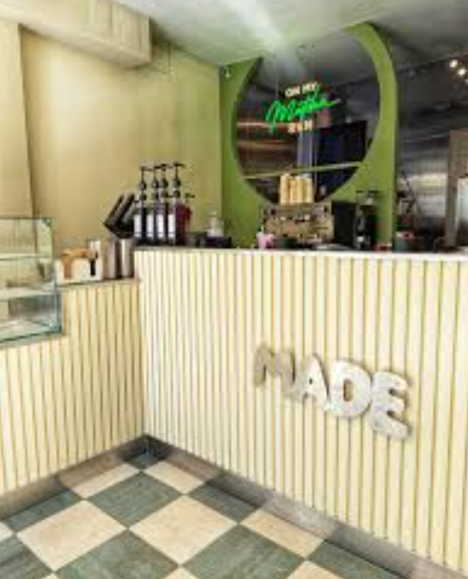
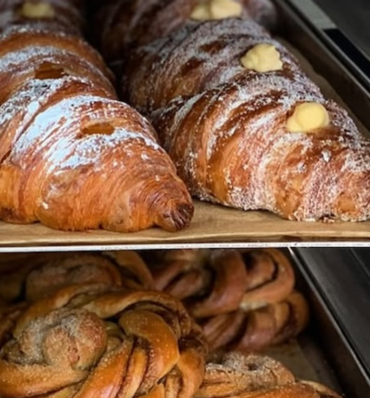
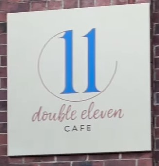
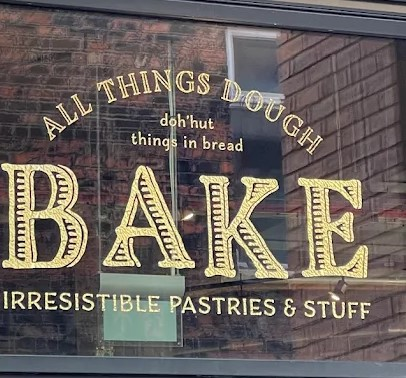

Why Leeds?
Leeds has the oldest running commercial railway in the world
Established in 1758, the Middleton Railway holds the distinction of being the world's oldest continuously working railway. It was originally built to transport coal from the Middleton Colliery to the thriving markets of Leeds.
Step into Leeds' fascinating history, filled with the magic and splendor of a bygone era. Explore the industrial past, where the heritage of steam and coal comes alive with every chuff and whistle.
CAFÉS and Tea Rooms
My favourite cafés and Tea rooms in Leeds

Coffee on the Crescent
Independent café known for homemade brownies, blondies, cakes, speciality coffee, and generous sandwiches. The owner is truly passionate about coffee, stocking a wide range of beans and brewing equipment.
Address:
2 The Crescent, Hyde Park, Leeds LS6 2NW
What I like about it
A cosy neighbourhood café with passionate coffee expertise, rotating sweet treats, and occasional coffee workshops. Their tea selection is equally impressive, and the sandwiches are generous and packed with filling.

Betty's Café Tea Rooms
Traditional English tea room offering afternoon tea, handmade cakes, macarons, and premium tea. Set in the picturesque Wharfedale Valley, Betty's attracts both shoppers and outdoor enthusiasts with its charming location and timeless elegance.
Address:
32 The Grv, Ilkley LS29 9EE
What I like about it
A classic Yorkshire experience known for elegant afternoon tea, attentive service, and the iconic three-tier sandwich stand. The macarons are beautiful and the tea is exceptional.

MADE
A specialist matcha café that first gained a loyal following in Sheffield before opening its Leeds location. MADE focuses on premium ceremonial-grade matcha sourced from Japan, serving expertly hand-whisked drinks, matcha desserts and soft serve. One of their signature features is their freshly prepared canned matcha drinks, where each drink is hand-whisked to order before being sealed in a stylish can, making it perfect to enjoy on the go.
Address:
165 Lower Briggate, Leeds LS1 6LY
What I like about it
What sets MADE apart is their mission to educate. Through their Instagram, they share the real health benefits of matcha for your body, skin and energy, reminding people that matcha isn't just a trend. The entire shop is striking, with its matcha green exterior that you can't miss. Every drink is hand-whisked to order, and I especially love that you can choose to have it sealed in a beautifully designed can.

An award-winning artisan bakery known for its handcrafted pastries, naturally fermented breads and creative seasonal bakes. Every item is made using high-quality ingredients, with a menu that changes regularly to showcase fresh flavours and local produce.
Address:
Unit 33, The Boulevard, Leeds Dock, Leeds LS10 1PZ
What I like about it
I love that every visit offers something new. Their pastries are beautifully crafted, and the seasonal specials always make it difficult to choose just one. It's no surprise they were featured in the Good Food Guide's Best Bakeries selection. If you enjoy Scandinavian-inspired pastries, their Swedish buns are definitely worth trying.

Double Eleven Cafe
A hidden gem in Leeds serving handcrafted cakes, speciality coffee, brunch and beautifully presented desserts. Located next to Mondego Outlet, the UK's first Portuguese stoneware ceramics store, it's the perfect place to enjoy delicious food while browsing unique Portuguese homeware.
Address:
The Tank Room, Roundhouse Business Park, Wellington Rd, Leeds LS12 1DR
What I like about it
This is one of my favourite places for cake in Leeds. Their selection is unlike anywhere else, featuring honey cake, pear and almond cake, pistachio gold, Black Forest gâteau and handmade cookies in flavours such as raspberry, Biscoff and pistachio. I also love that every cheesecake is individually decorated by hand. If you're looking for something lighter, they also offer delicious raw desserts that are gluten-free with no added sugar, without compromising on flavour.

BAKE
An independent bakery at Mustard Wharf specialising in creative sweet and savoury bakes. Every item is freshly made in-house each day using high-quality ingredients, offering a modern take on classic British baking.
Address:
Mustard Approach, Mustard Wharf, Lockside, Holbeck, Leeds LS1 4EY
What I like about it
BAKE is one of the most creative bakeries I've visited in Leeds. Everything looks as good as it tastes, with generous portions and imaginative flavour combinations. I especially enjoy watching the bakers at work in the open kitchen, which makes every visit feel even more authentic.
Activities
Things to see & do in Leeds

Harewood House
Harewood sits at the heart of Yorkshire, one of the Treasure Houses of England, the house was built in the 18th century and has art collections to rival the finest in the land in the setting of Yorkshire's most beautiful landscape.
Learn More
Abbey House Museum
A family-friendly museum exploring social history and childhood in Victorian era Leeds.
Learn More
Kirkstall Abbey
Kirkstall Abbey Visitor Centre tells you more about the lives of the 12th century monks and contains the touch table, a unique catalogue of images of the abbey from the 18th century to the present day.
Learn More